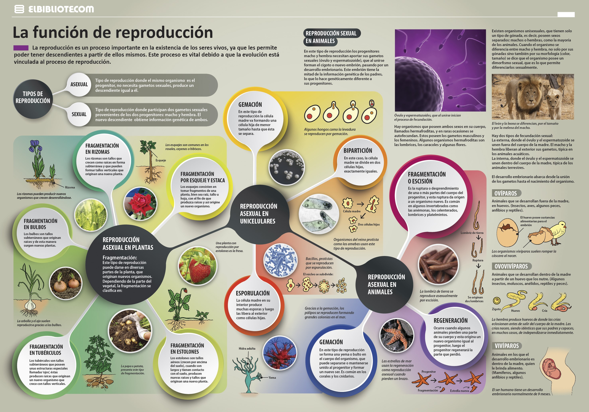

"<ion-view view-title="LionApp">
  <ion-content class="padding">
  <center><h2 class="styh11">La importancia del Agua</h2></center>
  <div class="container">
    <div class="row">
       <div class="col-md-2"></div>
      <div class="col-md-3 text-center">
        <h3 class="styh11">Niños</h3>
            <p>Aunque el agua es trascendental durante toda la vida, la infancia es una etapa particularmente sensible en cuanto a sus necesidades. </p>
      </div>
          <div class="col-md-3 text-center"><h3 class="styh11">Adolecentes</h3><p>Durante el crecimiento y la adolescencia el cuerpo sufre grandes cambios, al verse sometido a un constante requerimiento de energía.
      </div>
      <div class="col-md-3 text-center"><h3 class="styh11">Adultos</h3><p>
        El agua, representa aproximadamente las dos terceras partes del peso corporal.
  </div>
   <div class="col-md-1"></div>
</div></div>
<div id="video">
   <iframe width="340"  height="315" src="https://www.youtube.com/embed/KmQX_fR3NNI" frameborder="0" allow="accelerometer; autoplay; encrypted-media; gyroscope; picture-in-picture" allowfullscreen></iframe>
   </div>


  <h1 class="styh11">Infografia Reproduccion sexual.</h1>
  
  </ion-content>
</ion-view>
